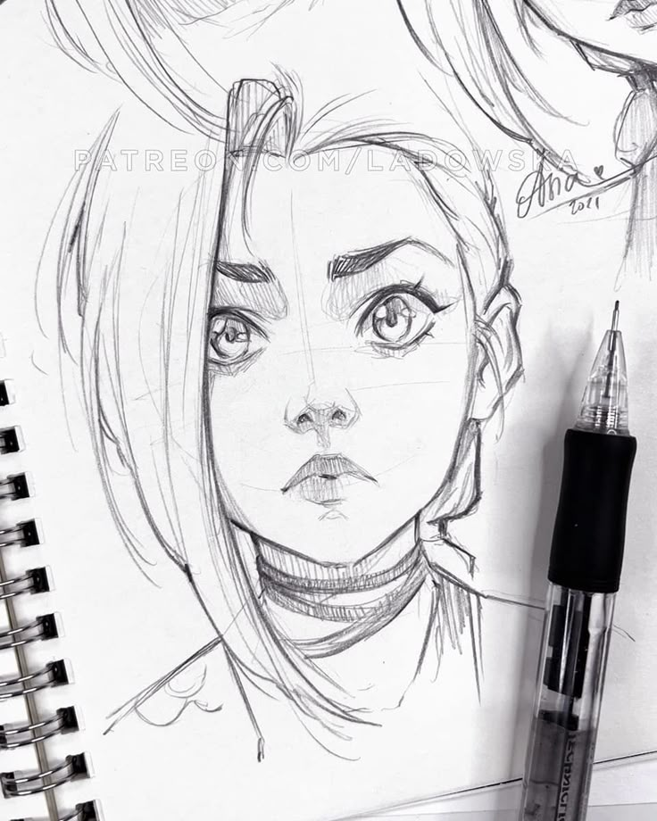

me representa💖
Descripción, 28 noviembre 2024

Aqui algunas cosas que me interesan, como Jesucristo, la mitologia griega y el Anime
El Arte🎨
Descripción, 28 noviebre 2024

Desde pequeña, el dibujo siempre ha sido una forma de expresión y creatividad para mí. La sensación de tomar lápiz y papel y dar vida a mis ideas es simplemente mágica, y es algo que siempre me ha apasionado. Me encanta experimentar con diferentes técnicas y estilos, y disfrutar de la sensación de libertad que el dibujo me brinda.